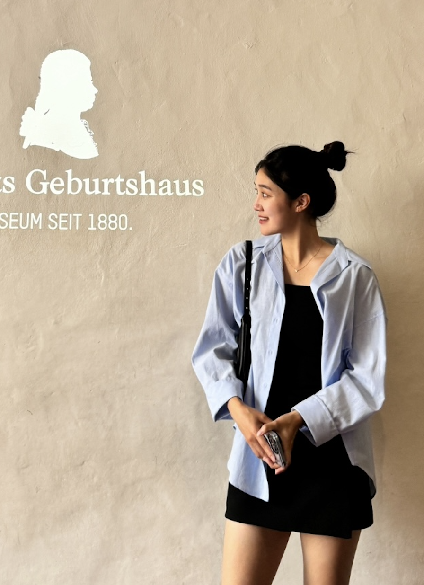
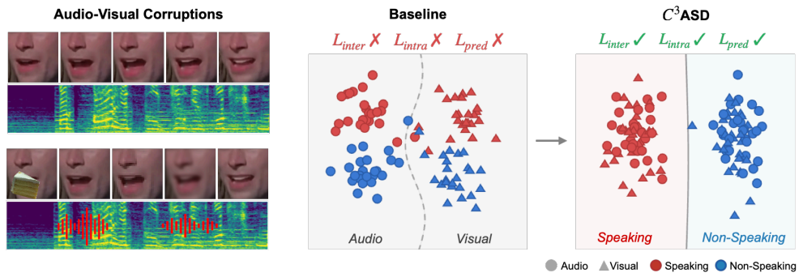
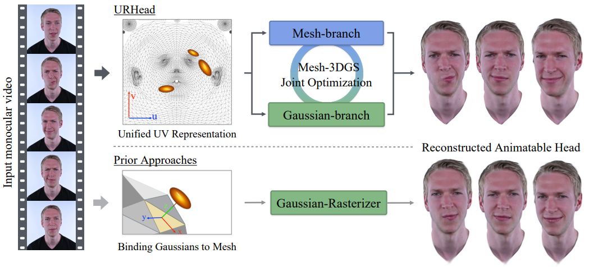
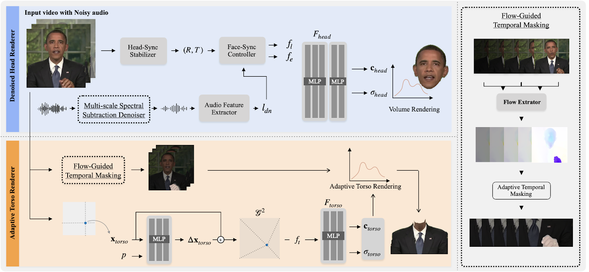
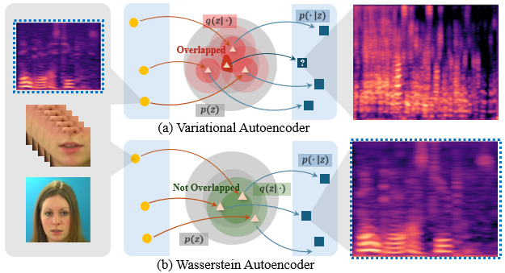
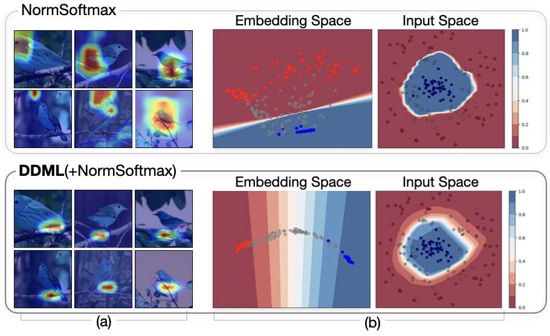
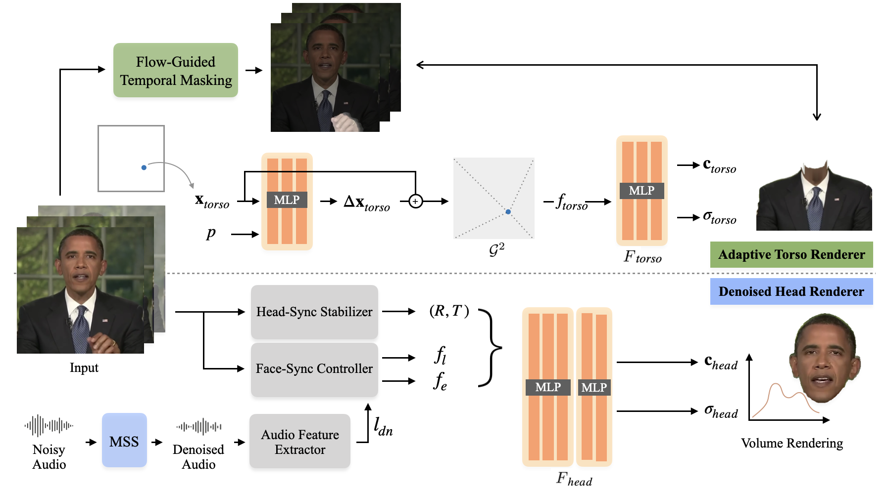
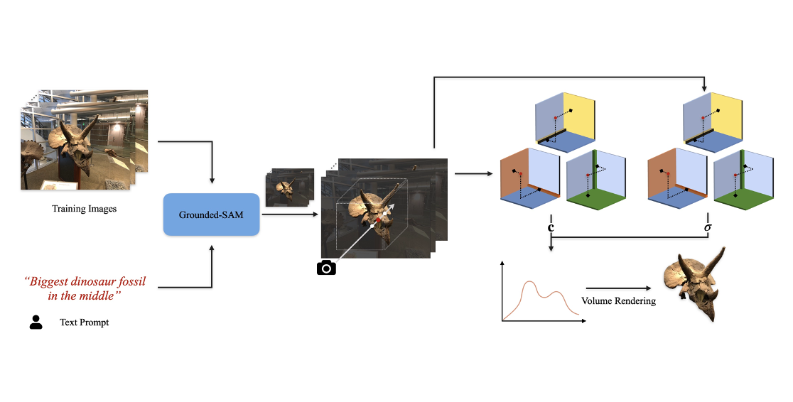
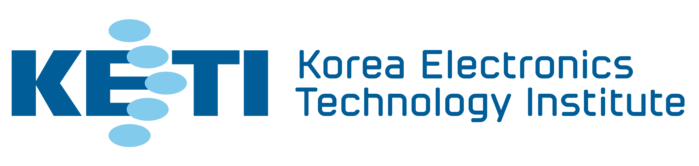

Jisoo Park
I am a Ph.D. student in the Computer Vision and Machine Learning (CVML) Lab at Chung-Ang University, advised by Junseok Kwon. I completed my M.S. in Artificial Intelligence and B.S. in Computer Science and Engineering at the same institution.
My research focuses on audio-visual learning, where vision and hearing (the two primary senses humans rely on to perceive the world) meet in a single model. I am broadly interested in understanding and generating multimodal signals that combine these modalities, and I am recently extending this line of work to brain signals to explore deeper, more integrated forms of multimodal fusion.

News
- 2026.06 Two papers have been accepted to ECCV 2026.
- 2025.09 Visiting researcher at University of Birmingham.
- 2025.08 One paper has been accepted to ASRU 2025.
- 2024.12 Started a research internship at Korea Electronics Technology Institute (KETI).
- 2024.12 One paper has been accepted to AAAI 2025.
- 2024.09 One paper has been accepted to ECCV 2024 Workshop.
Publications
* denotes equal contribution. † denotes corresponding author.

C³ASD: Multi-Level Consistency-Driven Representation Learning for Robust Active Speaker Detection
The European Conference on Computer Vision (ECCV), Malmö, Sweden, 2026
Enforces audio-visual consistency at the embedding, sequence, and prediction levels to keep active speaker detection robust under noise, occlusion, and modality corruption.

URHead: A Unified UV-Space Representation for Joint Mesh–3DGS Optimization in Head Avatars
The European Conference on Computer Vision (ECCV), Malmö, Sweden, 2026
Unifies mesh and 3D Gaussian representations in a shared UV space and jointly optimizes them, so head avatars stay both fully controllable and photorealistic.

WildTalker∞: Pushing the Limits of 3D Talking Portrait Synthesis in Unconstrained Environments
IEEE Transactions on Audio, Speech and Language Processing (T-ASLP), vol. 34, pp. 1259–1271, 2026
Synthesizes robust 3D talking portraits in the wild via flow-guided temporal masking for transient visual artifacts and multi-scale spectral subtraction for noisy audio. (extended version of our ECCV-W WildTalker)

Lightweight Wasserstein Audio-Visual Model for Unified Speech Enhancement and Separation
IEEE Automatic Speech Recognition and Understanding Workshop (ASRU), Honolulu, Hawaii, USA, 2025
A lightweight, unsupervised audio-visual model that unifies speech enhancement and separation, using lip and face cues with Wasserstein regularization and no paired clean data.

Deep Disentangled Metric Learning
The 39th Association for the Advancement of Artificial Intelligence (AAAI), Philadelphia, Pennsylvania, USA, 2025
Adds class-agnostic, information-bottleneck regularization to proxy-based metric learning, disentangling features to improve generalization to unseen classes.

VT-Surf: Visual Tracking with Switching Dynamics under Time-Series Forecasting
IET Electronic Letters, Vol. 61, 2025
Reframes visual tracking as multivariate time-series forecasting, using a Markov jump process over SDE-based motion regimes to handle abrupt, nonlinear target motion.

WildTalker: Talking Portrait Synthesis in the Wild
The 18th European Conference on Computer Vision Workshop (ECCV Workshop) — 3D Modeling, Reconstruction, and Generation in the Wild, Milano, Italy, 2024
Generates natural, lip-synced 3D talking portraits in noisy, dynamic real-world conditions through flow-guided temporal masking and multi-scale spectral subtraction.

POTF: Prompt-based Object-centric Tensorial Field
The 15th International Conference on ICT Convergence (ICTC) Workshop — Oral Presentation, Jeju Island, Korea, 2024
Combines text/image-prompted segmentation (Grounded SAM) with tensor decomposition to reconstruct and render user-specified objects in a 3D scene efficiently.

SOTA: Sequential Optimal Transport Approximation for Visual Tracking in Wild Scenario
IEEE Access (ACCESS), Vol. 12, no. 1, pp. 177028–177037, 2024
A probabilistic tracker that pairs sequential Monte Carlo sampling with optimal transport across temperature steps to track objects through abrupt appearance changes.
Experience
Visiting Researcher (incoming)
Imperial College London · London, UK
Aug. 2026 –

Research Intern
Korea Electronics Technology Institute (KETI) · Seongnam, Korea
Dec. 2024 – Mar. 2025
- Intelligent Image Processing Research Center
- Worked on Generalized deepfake detection
Scholarships & Fellowships
- AI Seoul Tech Research Support Program, Seoul Future Foundation (2026–2027)
- IITP Applied AI Fellowship (University of Toronto), Ministry of Science and ICT, Korea (2024)
Patents
- Jinhee Park, Jisoo Park, Dagyeong Na, and Junseok Kwon. KOR Patent 10-2024-0096387, “Deep Metric Learning Method for Similarities between Images Introducing Class-agnostic Features” (July 2024).